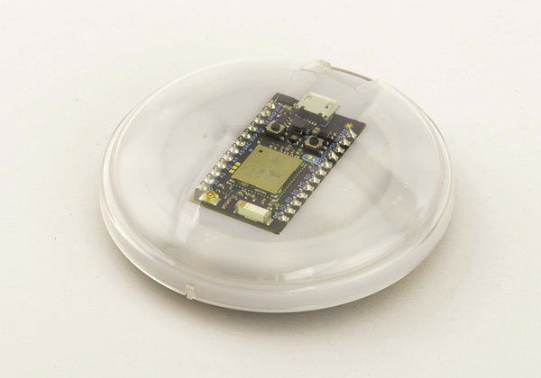

The Internet Button is a product by Particle that combines their Photon WiFi dev board with a well designed adapter board containing several inputs (4x buttons and an accelerometer) and outputs (11 LEDs and a buzzer). It’s intended to be a good starting point for using the Photon, requiring no soldering to use. The 11 LEDs arranged in a ring and buzzer make it a good platform for a connected display project.
Packaging and Contents
Particle really pays attention to their product packaging, and the Internet Button is no exception. The Internet Button is round, and so is the packaging. The outer packaging looks like a container for storing spices, with a window that shows the front of the Internet Button, framing the Photon inside. Inside is some custom cut foam to keep things in place, a nicely molded USB cable with the Particle logo, a Particle sticker, and a little card with a URL to find instructions to get started. The “spice tin” makes for good storage, or a way protect the Internet Button and cable if you want to hack on the go.
Design

I was really impressed with the Internet Button design except for one part which unfortunately we have to start with. The clear plastic cover on the outside is designed to protect the Photon, but is just resting on top, unattached to the rest of the parts. If you try to pick up the Internet Button by the cover, you will probably pick up just the cover and nothing else. It really needs to snap on to the other parts or something, right now I just remove it and have to be careful not to touch the exposed Photon. Another workaround is to add double-stick tape to the edge of the clear plastic to make it stick to the rest of the button.
Removing the cover, you see a ring of contoured white plastic with the Photon in the center. The white ring is translucent when the LEDs behind are lit, and has some Braille-like bumps for identifying three of the sides by feel.
The plastic is held down by the Photon so to expose the full PCB you need to remove the Photon. It’s held down pretty securely by the 24 pins, and takes some force to pry it up with a finger by the only exposed end. I try to lift the PCB and not the USB connector to avoid damage. You can use the use the board with and without the plastic cover, which is good if you want to use the Internet Button as a prototyping platform.
The top of the PCB has 11 LEDs arranged like a clock face with one missing where the USB cable plugs in. The 12th LED can’t be placed because there’s not enough room to stack an LED and layer of white plastic while leaving room for the USB plug. They were nice enough to leave the pads so if you really wanted to add the LED - and were OK with not being able to add the white plastic back on - you could solder one on yourself. There is enough clearance for the USB cable to plug in above the 12th LED. I feel like the missing LED is a missed opportunity. It might have been possible to raise the Photon slightly using plastic as a spacer, which would leave room for an LED underneath. The LED could be obscured by the USB plug, but could shine a bit through a clear-finish USB cable. Maybe Particle will consider this for a future version.
Also on the top is the accelerometer, and some helpful silkscreen showing the accelerometer X/Y directions, and which Photon pins are used by the components on the board. If you want to add to the board, there are seven free GPIO pins. Many of the useful pins are taken up by the peripherals on the Internet Button board, so using hardware I2C isn’t an option and hardware SPI would need to be shared with the accelerometer. The UART, some ADC inputs, one DAC output, and PWM outputs are available:
| Pin | Alt Functions |
| D2 | TIM3_CH2 |
| D1 | |
| A1 | ADC13 |
| A0 | ADC15 |
| A4 | ADC4/DAC |
| TX | UART_TX/TIM1_CH2 |
| RX | UART_RX/TIM1_CH3 |
The pinout is somewhat unfortunate as it limits the Internet Button’s potential as a prototyping platform. The Buzzer output could probably have been moved to another PWM pin (e.g. D2) leaving both I2C pins free. The second hardware SPI is blocked, but freeing it would be a tradeoff, either reducing the available ADC pins from 3 to 1 or taking up the two UART/PWM pins.
Flipping the PCB over, you see four buttons, the buzzer, and a little buffer to drive the first LED in the ring with 5V instead of the Photon’s 3.3V. There are also pads where a JST-PH battery connector could go, and the female headers where the Photon attaches. It’s easy to overlook, but there is also a hole in the center which can be used to add a screw for loosely mounting the Internet Button to a surface, e.g. if you wanted it mounted on the wall. The buttons seem like a good choice, with nice resistance to avoid accidental pressing, and satisfying click when pressed. I wish there were an actual JST-PH battery connector placed and not just pads. The rest of the design lets you get started with a Photon project without having to do any soldering, but if you want to add a battery with removable connector, you have to make the jump to SMT soldering. I think this could be added to a future version without increasing the cost significantly. There’s no pinout silkscreen on the bottom of the board, which would have been helpful if you’re trying to add connections to the bottom of the board with the opaque diffuser placed on top.
It may seem like an insignificant part of the design, but the two 2x12 female headers where the Photon plugs in are what got me most excited about this product and made me decide to purchase it. In other shields I’ve seen for the Photon the connectors are quite tall and raise the Photon about 8mm off the shield, which is fine if you’re prototyping but not if you actually want to use the board. The SMT headers on the Internet Button are only a little over 5mm high and placing them on the bottom of the board doesn’t raise the Photon at all above the top of the board. The extra row of connectors on each side is actually a bonus, as it allows you to plug in a strip of male headers or male jumper wires to either the front or back of the board for connecting up to another circuit or debugging equipment. It’s a great connector solution and something I plan to use in the next shield I design, kudos to the designer.
Software
A great hardware design only goes so far without software to run on it, so how does that stack up? Following the link in the tin takes you to a single page which quickly gets you started with connecting the Photon to WiFi and the Particle Cloud, then running some examples.
The first few examples are basic and documented through the comments in the code. They show you how to blink some LEDs, use the buttons, and use the accelerometer and are a good introduction to the hardware.
The Internet example is where things start to get interesting, but the documentation falls short. The Internet example lets you control the LED brightness and color using buttons on the photon, and listens for an API function to change the number of LEDs turned on over the internet. The example links to a companion HTML file (containing mostly Javascript) on GitHub that can be viewed to connect to your Internet Button and control the number of LEDs, without much explanation of what to do with the file. There’s no explanation of how to use the HTML file, which GitHub displays as source only. I found two alternatives: download the html file and use your browser to open the local copy, or use a service like GitHub Preview to view the HTML content from GitHub instead of just the source. Interacting with the Photon through Javascript is just one use case. You could see what’s going on behind the scenes by calling the API directly, but this isn’t covered at all, and there isn’t even a link to the Cloud API docs. There is a tutorial for controlling a single LED through Particle Cloud. This would probably get me the information I need to interact with this example more, but I wish there were a similar tutorial focused on the Internet Button.
Next up is a simple example to play tones on the buzzer. The library has an easy API for this, playing combinations of notes and duration, which you can join together to make a song.
Finally is a large example called ReleaseFirmware that combines a lot of features - nearly everything except the accelerometer - but again is lacking documentation. There are a lot of comments, but at a glance it’s not clear what the app is supposed to do, or how to interact with it. There is a recommendation to download Particle Dev and with Dev installed, signed into Particle Cloud, and connected to the InternetButton device, you can interact with the example application without writing code. The menu item Particle-Show Cloud Functions brings up a list of functions you can call. You can easily find the arguments that the functions expect in the comments. This example also uses publish(), but doesn’t introduce the function or explain what you can do with it.
After going through the examples and Internet Button guide, I’m left unsatisfied as the Internet Button isn’t doing anything useful on the Internet and the guide doesn’t give me any clue where to start to make it useful. Going back to the marketing page for the Internet Button, I see IFTTT integration listed as a major feature if not a big component of the system, but it wasn’t brought up in the Internet Button guide. There is an IFTTT Guide in Particle Docs, and referencing this guide along with the Publish() and Function() calls in the ReleaseFirmware example I could probably get the Internet Button triggering and being triggered by IFTTT recipes. This really should be included in the Internet Button guide as Particle pitches the product as “Press this button and something happens on the internet.”.
Summary
The Internet Button is a well designed hardware platform that can be used for getting started with the Photon, interacting with or displaying information from the internet, and as a prototyping platform. It falls short in example software and documentation, but that is something that Particle hopefully will improve over time.
Make sure you subscribe to the Connected Displays blog if you want to see more projects and tutorials using the Internet Button.
References: